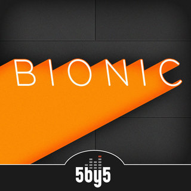

Bionic - A podcast about Tearaway Trousers and Tech
Link - 5by5 | Bionicbionic
Bionic is a show dedicated to the analysis of competing technological and media ecosystems. With a specific view toward the mobile landscape, your two co-hosts bring years of Apple experience to a new world of context and insight.
Sure it is...
It's two guys (Myke Hurley and Matt Alexander) ranting about Tearaway Trousers and Cocaine Tricycles, this produces great radio. Very happy I found this podcast, if you havent heard it give it a go.
This is a very entertaining show Check it out then make some tear away trousers
